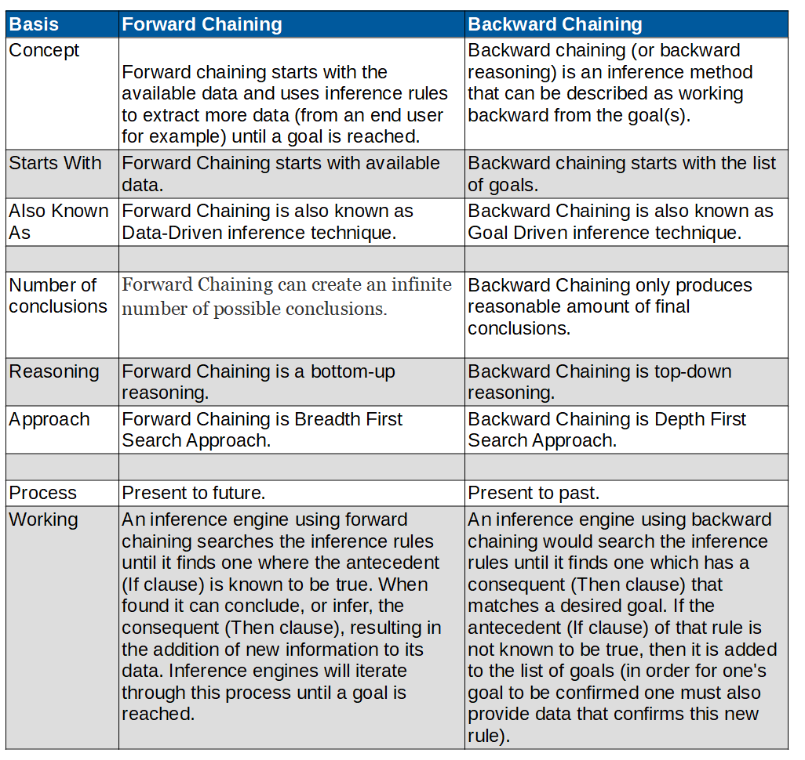
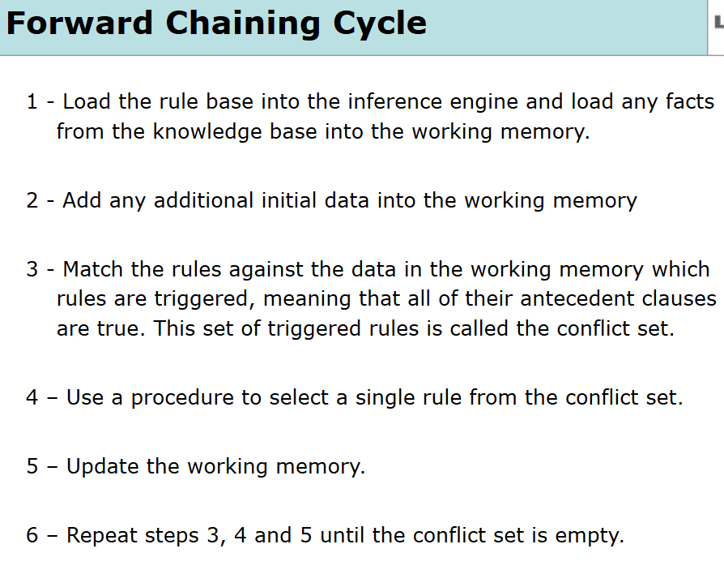
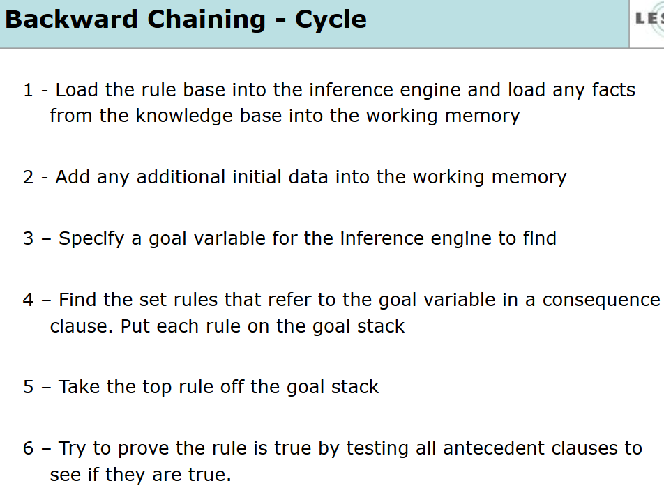
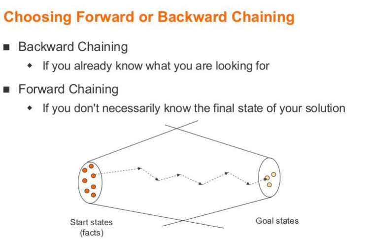

I Love Everything That Makes Me More Human.
Difference Between Forward Chaining and Backward Chaining(Forward Chaining vs Backward Chaining)

What is the main difference between forward chaining and backward chaining?
The main difference between forward chaining and backward chaining is Forward chaining starts with the available data and uses inference rules to extract more data (from an end user for example) until a goal is reached whereas Backward chaining (or backward reasoning) is an inference method that can be described as working backward from the goal(s). Forward Chaining starts with available data. Backward chaining starts with the list of goals.
The difference between forward chaining and backward chaining is shown in the table below and the image above.
| Basis | Forward Chaining | Backward Chaining |
| Concept | Forward chaining starts with the available data and uses inference rules to extract more data (from an end user for example) until a goal is reached. | Backward chaining (or backward reasoning) is an inference method that can be described as working backward from the goal(s). |
| Starts With | Forward Chaining starts with available data. | Backward chaining starts with the list of goals. |
| Also Known As | Forward Chaining is also known as Data-Driven inference technique. | Backward Chaining is also known as Goal Driven inference technique. |
| Number of conclusions | Forward Chaining can create an infinite number of possible conclusions. | Backward Chaining only produces reasonable amount of final conclusions. |
| Reasoning | Forward Chaining is a bottom-up reasoning. | Backward Chaining is top-down reasoning. |
| Approach | Forward Chaining is Breadth First Search Approach. | Backward Chaining is Depth First Search Approach. |
| Process | Present to future. | Present to past. |
| Working | An inference engine using forward chaining searches the inference rules until it finds one where the antecedent (If clause) is known to be true. When found it can conclude, or infer, the consequent (Then clause), resulting in the addition of new information to its data. Inference engines will iterate through this process until a goal is reached. | An inference engine using backward chaining would search the inference rules until it finds one which has a consequent (Then clause) that matches a desired goal. If the antecedent (If clause) of that rule is not known to be true, then it is added to the list of goals (in order for one's goal to be confirmed one must also provide data that confirms this new rule). |
Forward Chaining
Forward chaining starts with the available data and uses inference rules to extract more data (from an end user for example) until a goal is reached. An inference engine using forward chaining searches the inference rules until it finds one where the antecedent 5 (If clause) is known to be true. When found it can conclude, or infer, the consequent (Then clause), resulting in the addition of new information to its data. Inference engines will iterate through this process until a goal is reached.
Backward Chaining
Backward chaining (or backward reasoning) is an inference method that can be described as working backward from the goal(s). It is used in automated theorem provers, proof assistants and other artificial intelligence applications, but it has also been observed in primates. In game theory, its application to (simpler) sub-games in order to find a solution to the game is called backward induction. In chess, it is called retrograde analysis, and it is used to generate table bases for chess endgames for computer chess. Backward chaining is implemented in logic programming by SLD resolution. Both rules are based on the modus ponens inference rule. It is one of the two most commonly used methods of reasoning with inference rules and logical implications – the other is forward chaining. Backward chaining systems usually employ a depth-first search strategy, e.g. Prolog.
Choosing Forward or Backward Chaining
When to choose Backward Chaining? Choose Backward Chaining If you already know what you are looking for.
When to choose Forward Chaining? Choose Forward Chaining, If you don't necessarily know the final state of your solution.
Forward Chaining example
Suppose that the goal is to conclude the color of a pet named Fritz, given that he croaks and eats flies, and that the rule base contains the following four rules:
- If X croaks and eats flies - Then X is a frog
- If X chirps and sings - Then X is a canary
- If X is a frog - Then X is green
- If X is a canary - Then X is yellow
This rule base would be searched and the first rule would be selected, because its antecedent (If Fritz croaks and eats flies) matches our data. Now the consequents (Then X is a frog) is added to the data. The rule base is again searched and this time the third rule is selected, because its antecedent (If Fritz is a frog) matches our data that was just confirmed. Now the new consequent (Then Fritz is green) is added to our data. Nothing more can be inferred from this information, but we have now accomplished our goal of determining the color of Fritz.
Backward Chaining example
An Example of Backward Chaining:
- If X croaks and eats flies – Then X is a frog
- If X chirps and sings – Then X is a canary
- If X is a frog – Then X is green
- If X is a canary – Then X is yellow
This rule base would be searched and the third and fourth rules would be selected, because their consequents (Then Fritz is green, Then Fritz is yellow) match the goal (to determine Fritz's color). It is not yet known that Fritz is a frog, so both the antecedents (If Fritz is a frog, If Fritz is a canary) are added to the goal list. The rule base is again searched and this time the first two rules are selected, because their consequents (Then X is a frog, Then X is a canary) match the new goals that were just added to the list. The antecedent (If Fritz croaks and eats flies) is known to be true and therefore it can be concluded that Fritz is a frog, and not a canary. The goal of determining Fritz's color is now achieved (Fritz is green if he is a frog, and yellow if he is a canary, but he is a frog since he croaks and eats flies; therefore, Fritz is green).
Difference Between Forward Chaining and Backward Chaining on the basis of Starts With
Forward Chaining tarts with the initial facts whereas Backward Chaining starts with some hypothesis or goal.
Difference Between Forward Chaining and Backward Chaining on the basis of Test of rules
Forward Chaining tests all the rules but Backward Chaining tests some rules.
Difference Between Forward Chaining and Backward Chaining on the basis of Questions
Forward Chaining asks many questions but Backward Chaining asks few questions.
Difference Between Forward Chaining and Backward Chaining on the basis of information
Forward Chaining provides a huge amount of information from just a small amount of data whereas Backward Chaining provides a small amount of information from just a small amount of data.
Difference Between Forward Chaining and Backward Chaining on the basis of Working
Forward chaining works forward to find conclusions from facts whereas backward chaining works backward to find facts that support the hypothesis.
Difference Between Forward Chaining and Backward Chaining on the basis of Breadth-first or Depth-first
Forward Chaining tends to be breadth-first whereas Backward Chaining tends to be depth-first.
Difference Between Forward Chaining and Backward Chaining on the basis of Data
All data is available in forward chaining but data must be acquired interactively(on demand) on backward chaining.
Difference Between Forward Chaining and Backward Chaining on the basis of forming a goal
Forming a goal is difficult on forward chaining whereas forming a goal is easy on backward chaining.
Forward Chaining vs Backward Chaining Youtube Videos
This is a brief description of the different kinds of logic that may be used in determining the solution to a problem.
A short description to both those algorithms. These are algorithms to answer questions poised to a knowledge base.
Hey there, I'm Nischal.
I am a student, a developer and I specialize in
standards-based Web Development(Django, JS, HTML, CSS ) and ML/DL.
I love Everything that makes me more Human. While
not Coding, I play and/or watch football.
Copyright text 2020 by Nischal!!
Newsletter
A rover wearing a fuzzy suit doesn’t alarm the real penguins. Then What Alarms The Penguins. Subscribe Me To Find Out.
Follow Me